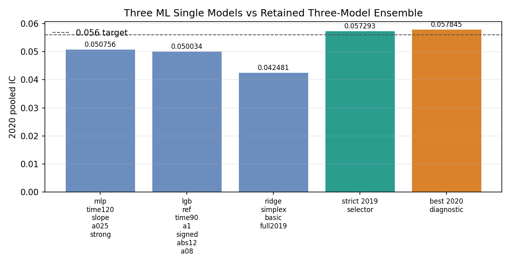
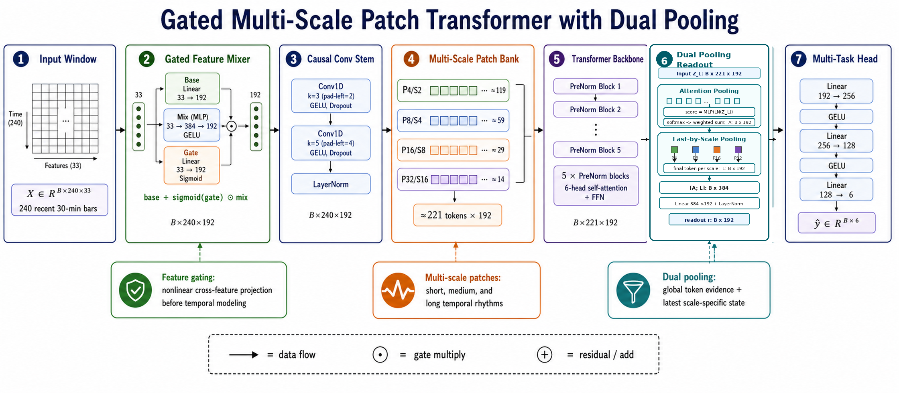
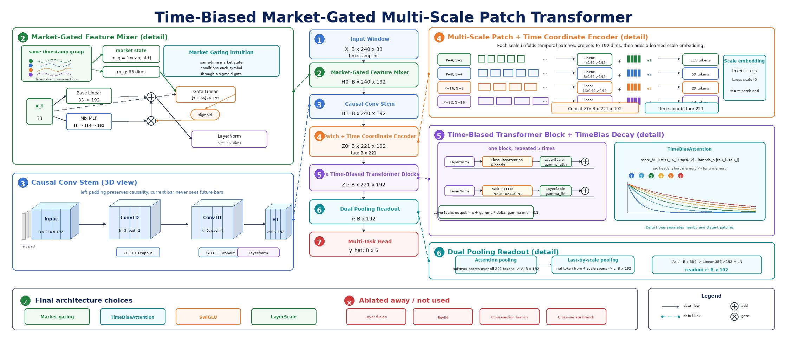

0摘要与核心结果Abstract & headline results
挑战要求用 1 分钟 bar 数据预测中国期货 51 个品种的未来 30 分钟收益，主指标是「池化 IC」（把全样本预测与标签拉平后计算的余弦相似度），0.05 被视为合理起点，0.2 则属于「好得不真实」。
我的解题遵循一条清晰的递进路线：因子工程 → ML / 线性基模型 → 三模型 strict 集成（强基线）→ 端到端小模型（验证可行性）→ 端到端大规模 Transformer 阶梯（v1→v2→v3，追求表达力与创新）→ 滚动复训。两条技术线均稳定越过 0.05：当前保留的 ML 集成 raw_xsz6__signed_ridge_a01__time90_a0.25 在 2020 年取得 0.0573 的池化 IC（月均 IC 0.0596，月度信息比 4.95）；端到端 Transformer 的最终版 v3 取得 0.0548 的池化 IC，并且在验证集到测试集之间保持了 v3>v2>v1 的稳定排序。
报告的重点不只是「做到了多少」，更是「为什么这样做」：patch embedding 借鉴 LLM 的分词/分块思想；注意力时间偏置与输出 pooling 来自时序建模工作；FactorBank 与 Mixer 则通过可训练的、低秩的、具金融含义的交互结构，在模型前端「充当特征」，主动收缩搜索空间，以对抗维度灾难导致的震荡不收敛；LayerScale 促进深层残差收敛；SwiGLU 提升 FFN 表征能力。下文逐一展开动机与论文来源，并补充充分的可视化（跨族对比、滚动 IC、20 桶收益、验证→测试持续性、消融）。
The challenge is to predict the 30-minute forward return of 51 China-futures symbols from 1-minute bars. The headline metric is the pooled IC — the cosine similarity between flattened predictions and labels across all symbols and time. 0.05 is the stated "reasonable starting point"; above 0.2 is "too good to be true."
My solution follows a deliberate escalation: factor engineering → ML / linear base models → a strict three-model stack (strong baseline) → a small end-to-end model (feasibility) → a large end-to-end Transformer ladder (v1→v2→v3, chasing expressivity and novelty) → rolling refit. Both technical lines comfortably clear 0.05: the strict ML ensemble reaches a 0.0573 pooled IC on 2020 (monthly mean IC 0.0596, monthly information ratio 4.95), and the final end-to-end Transformer v3 reaches a 0.0548 pooled IC while preserving the v3>v2>v1 ordering from validation to test.
The report emphasizes not just how much but why: patch embedding borrows the chunking/tokenization idea from LLMs; the attention time-bias and the output pooling come from time-series modeling; and the FactorBank/Mixer use trainable, low-rank, financially-meaningful interaction structures that "act as features" at the front of the network, actively shrinking the search space to fight the oscillation-without-convergence that the curse of dimensionality induces. LayerScale eases deep-residual convergence; SwiGLU lifts the FFN's representational power. Each motivation and its source paper are unpacked below, alongside ample supplementary visualizations (cross-family comparison, rolling IC, 20-bucket returns, validation→test persistence, ablations).

1挑战定义The challenge
核心规格（源自 Jump 项目 PDF）：
- 任务：用 1 分钟 bar 预测 30 分钟收益 Returnt = ClosePricet+30 / ClosePricet − 1。
- 品种：数据含 57 个合成连续合约，剔除 T/TF/TS/IF/IC/IH（国债与股指）后保留 51 个。价格已做换月调整并归一化为起点 1。
- 交易时段：不同品种、不同日期的日盘/夜盘时段不同；设计时序特征时必须精确识别。
- 标签的长休市处理：每个长休市前最后 30 行标签置 NaN。长休市包括（a）日盘→次日夜盘、（b）夜盘→次日日盘、（c）当日无夜盘时日盘→次日日盘。短休市需被「跳过并拼接」——例如 10:15–10:30 为短休市，则 10:00 的标签应使用 10:45 的价格（跳过短休后正好 30 个时点）。
- 因果性：推断时只能使用当前时点及之前的信息；模型只能用历史数据训练。允许滚动训练（如按月滚动），PDF 明示「频繁滚动训练通常是稳赚的提升」。
- 时间戳：预处理时向下取整到分钟。
- 评估指标：以 IC 为主——
即预测与标签的余弦相似度（池化所有品种与时点为一个 IC）。辅以 R²/MSE，以及 mean(IC)/std(IC)（按月计算，衡量稳定性）。
交付物：2018-01-01 以来全部 51 品种的预测；逐年 IC；月度 IC 曲线；简要报告（结果、观察、流程、消融）；可复现代码且起止日期可配置（以便在样本外数据上测试）。主方法须为深度学习，一定程度的特征工程通常有益，鼓励有效的自主创新。
Core spec (from the Jump project PDF):
- Task. Predict the 30-minute return from 1-minute bars: Returnt = ClosePricet+30 / ClosePricet − 1.
- Universe. 57 synthetic continuous contracts; after excluding T/TF/TS/IF/IC/IH (bonds & equity-index), 51 symbols remain. Prices are roll-adjusted and normalized to 1 at the start.
- Sessions. Day/night sessions differ across products and dates; time-series features must respect them precisely.
- Long-break labelling. The last 30 rows before each long break are set to NaN. Long breaks are (a) day→next-night, (b) night→next-day, and (c) day→next-day when no night session that date. Short breaks must be skipped and chained — e.g. if 10:15–10:30 is a short break, the label at 10:00 uses the price at 10:45 (exactly 30 points once the short break is skipped).
- Causality. At inference only information up to t is available, and models may train only on historical data. Rolling training is allowed; the PDF notes "frequent rolling training is usually an easy win."
- Timestamps. Floored to the integer minute in preprocessing.
- Metric. IC is primary —
i.e. the cosine similarity of prediction and label (pooled over all symbols and time). Supplemented by R²/MSE and mean(IC)/std(IC) (monthly, a stability measure).
Deliverables. Predictions for all 51 symbols since 2018-01-01; per-year IC; a monthly IC curve; a brief report (results, observations, pipeline, ablation); reproducible code with configurable start/end dates (to test on out-of-sample data). Deep learning must be the main methodology; some feature engineering usually helps; useful self-driven innovation is a bonus.
2方法路线图Methodology roadmap
我刻意先用经过千锤百炼的经典方法建立一个诚实、强、且零泄漏的基线，再把端到端深度学习从「小规模验证可行」逐步推到「大规模精雕细琢」。这样每一次架构创新都能在一个可信的标尺上被检验。
I deliberately first built an honest, strong, zero-leakage baseline with battle-tested classical methods, then escalated end-to-end deep learning from "small-scale feasibility" to "large-scale, finely-engineered." Every architectural innovation is thus tested against a trustworthy yardstick.
因子工程Factors
1144 个无泄漏因子；9 大家族；会话/标签基础设施。1,144 leak-free factors; 9 families; session/label infra.
ML / 线性基模型ML base models
MLP / LightGBM / Ridge，配日内校准与视图融合。MLP / LightGBM / Ridge with intraday calibration.
集成基线Ensemble
MLP/LGB/Ridge 六视图 stack → 0.0573 强基线。MLP/LGB/Ridge six-view stack → 0.0573 baseline.
端到端可行性E2E feasibility
小 Transformer 跑通管线与因子算子思想。Small Transformer validates pipeline & idea.
端到端阶梯 v1→v3E2E ladder v1→v3
多尺度 patch + 时间偏置 + 市场门控 + 因子算子库。Multi-scale patch + time-bias + market gate + factor bank.
3数据与因子工程Data & factor engineering
3.1 会话、长/短休市与标签3.1 Sessions, long/short breaks, and the label
会话检测（sessions.py）以 ≥60 分钟 的间隔判定长休市，并为每行打上 session_id、is_long_break_before、gap_min、bars_to_next_long_break。短休市（<60 分钟）不重置会话，从而自然实现 PDF 要求的「跳过短休、拼接前后」。
标签（labels.py，horizon=30）逐会话计算：label[t] = close[t+30]/close[t] − 1，且 t 与 t+30 必属同一会话。三类置 NaN：会话末尾 30 行（前向 bar 不足）、每个长休市前 30 行、以及 close 为 0/非有限的行。时间戳在加载阶段已向下取整到分钟。
Session detection (sessions.py) flags a long break at a gap of ≥60 minutes and stamps each row with session_id, is_long_break_before, gap_min, and bars_to_next_long_break. Short breaks (<60 min) do not reset the session, which naturally realizes the PDF's "skip the short break and chain the two parts."
The label (labels.py, horizon=30) is computed per session: label[t] = close[t+30]/close[t] − 1, with t and t+30 guaranteed to lie in the same session. Three NaN rules: the last 30 rows of a session (insufficient forward bars), the 30 rows before each long break, and rows where close is 0 / non-finite. Timestamps are floored to the minute at load time.
3.2 因子库：9 大家族、斐波那契窗口、截面视图3.2 Factor library: 9 families, Fibonacci windows, cross-sectional views
核心因子库（factor_lib.py）每品种构造约 1,085 个因果时序因子，覆盖 9 大家族；窗口采用斐波那契式间隔以维持低互相关：WINS=[2,3,4,5,6,8,10,13,16,21,26,34,42,55,72,89,120,144,180,233,288]（21 个），WINS_MID=17 个。
- 动量/收益：mom、sharpe、roc、px_sma、mom_accel、EMA 差与 MACD（10 组）。
- 波动率：已实现波动 rv、Parkinson、下行波动 dvol、偏度/峰度、ATR/range、vol_regime。
- 振荡器：stoch、willr、rsi、cci、bollz（布林 z）、cmo、收益自相关。
- 量/额：成交量 z、量动量、turnover、量价/额价相关、Amihud 非流动性、有向量、涨跌量比、MFI、VWAP 偏离。
- 持仓量 OI：oi_chg、oimom、oiz、oi_vol_ratio、oi_accel（仅在 OI 有效时）。
- K 线几何：BOP、实体/上下影线、收盘位置、影线不平衡、Dual-Thrust 位置、真实波幅方向。
- 交互项：mom×volz、mom×oimom、rv×volz。
- 效率/回撤：Kaufman 效率比、上/下行回撤、收益-OI 相关。
- 滞后变体：12 个基因子 × 4 个滞后（跨会话边界处掩码）。
每个原始因子再派生 4 类截面视图：原始、tsz（120 期滚动时序 z）、csz（按时间戳的截面 z）、csr（截面百分位秩）。约 4,340 个候选经 0.9 相关度贪心去冗后，保留 1,144 个最终因子。
The core library (factor_lib.py) builds ~1,085 causal time-series factors per symbol across 9 families. Windows are Fibonacci-spaced to keep correlation low: WINS=[2,3,4,5,6,8,10,13,16,21,26,34,42,55,72,89,120,144,180,233,288] (21), plus a 17-point WINS_MID.
- Momentum/returns: mom, sharpe, roc, px_sma, mom_accel, EMA-diff & MACD (10 pairs).
- Volatility: realized vol, Parkinson, downside vol, skew/kurtosis, ATR/range, vol_regime.
- Oscillators: stoch, willr, rsi, cci, Bollinger-z, cmo, return autocorrelation.
- Volume/amount: volume-z, volume momentum, turnover, price-volume/amount correlation, Amihud illiquidity, signed volume, up/down volume ratio, MFI, VWAP deviation.
- Open interest: oi_chg, oimom, oiz, oi_vol_ratio, oi_accel (only when OI is valid).
- K-line geometry: BOP, body/upper/lower shadow, close position, shadow imbalance, Dual-Thrust position, true-range direction.
- Interactions: mom×volz, mom×oimom, rv×volz.
- Efficiency/drawdown: Kaufman efficiency ratio, up/down drawdown, return-OI correlation.
- Lagged variants: 12 base factors × 4 lags (masked across session boundaries).
Each raw factor spawns four cross-sectional views: raw, tsz (120-period rolling time-series z), csz (per-timestamp cross-sectional z), and csr (cross-sectional percentile rank). About 4,340 candidates are reduced by a greedy 0.9-correlation dedup to 1,144 retained factors.
4机器学习与线性基模型ML & linear base models
三个互补的单模型，分别代表非线性深度（MLP）、树模型（LightGBM）与正则线性（Ridge）。共同点：滚动「先训后测」、丰富的视图输出（raw / xsz 截面 z / xrank 截面秩 / xcenter 截面中心化），以及日内时段感知的后校准。
Three complementary single models spanning non-linear depth (MLP), trees (LightGBM) and regularized linear (Ridge). Shared traits: rolling train-before-test, rich view outputs (raw / xsz cross-sectional z / xrank cross-sectional rank / xcenter cross-sectional centering), and intraday-aware post-calibration.
| 模型Model | 要点Key design | Pooled IC | SN IC | 月度 IRMonthly IR | 20桶差20-bin |
|---|---|---|---|---|---|
MLP mlp_time120_slope_a025_strong |
333 特征→1200→600→1，LayerNorm+SiLU+Dropout；损失=0.65·MSE+0.35·相关；120 分钟时段斜率校准(α=0.25)+单纯形视图融合333→1200→600→1, LayerNorm+SiLU+Dropout; loss = 0.65·MSE + 0.35·corr; 120-min time-bucket slope calibration (α=0.25) + simplex view blend | 0.0508 | 0.0651 | 3.89 | 78.5 bps |
LGB lgb_ref_time90_a1_signed_abs12_a08 |
280 树, 63 叶, lr 0.035, λ=6, subsample 0.82, colsample 0.68；两段校准：time90(α=1.0) + signed_abs12(α=0.8)280 trees, 63 leaves, lr 0.035, λ=6, subsample 0.82, colsample 0.68; two-stage calibration: time90 (α=1.0) + signed_abs12 (α=0.8) | 0.0500 | 0.0651 | 3.49 | 71.0 bps |
Ridge ridge_simplex_basic_full2019 |
Rank-Gaussian 变换 + Ridge(α=1.0)；单纯形(非负、和为1)视图融合Rank-Gaussian transform + Ridge (α=1.0); simplex (non-neg, sum-to-1) view blend | 0.0425 | 0.0642 | 2.90 | 65.4 bps |
5三模型严格集成（强基线）The strict three-model ensemble (strong baseline)
raw_xsz6__signed_ridge_a01__time90_a0.25 是当前保留的严格 ML 集成，只使用三条 ML_single 线：MLP、LGB、Ridge。它不是多历史组件扩展集成，而是一个可审计的小型三模型 stack。
- 组件：使用
mlp/lgb/ridge三个 raw 预测，以及对应的横截面 z-score 视图mlp_xsz/lgb_xsz/ridge_xsz。 - 候选搜索：在 2019 外折上筛选 137 个经典集成，包括 equal/top1/IC 正权/simplex/signed ridge 和时间桶校准。
- 严格选择：只用 2019 外折选择；该候选赢得 mean/std、q3+h2、q3+q4+h2、min+mean、h2 等 selector。
- 最终形式：signed ridge（alpha=0.1）融合 raw+xsz 六视图，再用 90 分钟时间桶、强度 0.25 做保守后校准。
结果（2020）：Pooled IC 0.0573、月均 IC 0.0596、月度 IR 4.95——相对最优单模型（MLP 0.0508）提升约 12.9%。SN/20 桶明细没有随三模型 strict 归档一起保存，因此不在此处编造。
raw_xsz6__signed_ridge_a01__time90_a0.25 is the retained strict ML ensemble. It uses only the three ML_single lines: MLP, LGB, and Ridge. It is a compact auditable three-model stack rather than the older multi-history expanded ensemble.
- Components. Use raw
mlp/lgb/ridgepredictions and their same-timestamp cross-sectional z-score viewsmlp_xsz/lgb_xsz/ridge_xsz. - Candidate search. Screen 137 classic ensembles on 2019 outer folds: equal/top1/positive-IC/simplex/signed-ridge plus time-bucket calibration.
- Strict selection. Select only from 2019 folds; this candidate wins the mean/std, q3+h2, q3+q4+h2, min+mean, and h2 selectors.
- Final form. Signed ridge with alpha=0.1 over raw+xsz six views, followed by a conservative 90-minute time-bucket multiplier with strength 0.25.
Result (2020): Pooled IC 0.0573, monthly mean IC 0.0596, monthly IR 4.95 — about +12.9% over the best single model (MLP 0.0508). SN and 20-bucket detail were not archived with this strict three-model line, so they are not fabricated here.
6端到端可行性验证End-to-end feasibility (end2end_single)
在投入大规模训练前，我先用一个小 Transformer 验证端到端管线与「网络内置因子算子」的想法是否成立：d_model=128、4 头、4 层、FFN=256、序列长 120、单尺度 patch (6,3)、低秩输入交互 + FactorOperatorBank(top_k=48)、MoE-4 头。按月滚动训练，在 2020-05..12 取得 Pooled IC 0.0397。
这一步的价值不在绝对分数，而在于以小代价排除了管线性风险（采样器、标签、因果掩码、因子算子前向、损失）并确认因子算子库确有增益——为后续把它放大到 v3 提供了信心与证据。
Before committing to large-scale training, I validated the end-to-end pipeline and the "factor operators inside the network" idea with a small Transformer: d_model=128, 4 heads, 4 layers, FFN=256, sequence length 120, single-scale patch (6,3), low-rank input interaction + a FactorOperatorBank (top_k=48), and an MoE-4 head. With monthly rolling training it reached Pooled IC 0.0397 on 2020-05..12.
The value here is not the absolute score but cheaply de-risking the pipeline (sampler, labels, causal masks, factor-operator forward pass, loss) and confirming the operator bank actually helps — giving the confidence and evidence to scale it up to v3.

7端到端大规模阶梯 v1→v3The large E2E ladder (v1→v3)
这是方案中最具创新性的部分。三代 Transformer 共享：33 维归一化输入（11 个 z-score 化的 bar 特征 + 6 个截面相对特征等，全部裁剪到 [−8,8]）、240 分钟回看窗、6 个多任务标签（5/10/30/60 分钟收益 + 已实现波动 + 振幅，主标签为 proxy_ret_30m_cs_zscore），损失为加权 Huber（权重 [0.1,0.1,1.0,0.05,0.05,0.05]）。验证协议：2017–2018 训练、2019 验证；2020 行用 pre-2020 重拟合后测试。
This is the most novel part. The three generations share a 33-dim normalized input (11 z-scored bar features + 6 cross-sectional relative features, all clipped to [−8,8]), a 240-minute lookback, and 6 multitask labels (5/10/30/60-min returns + realized volatility + range; the main label is proxy_ret_30m_cs_zscore), with a weighted Huber loss (weights [0.1,0.1,1.0,0.05,0.05,0.05]). Protocol: train 2017–2018, validate 2019; the 2020 rows refit on pre-2020 then test.
v1 — Gated Multi-Scale Patch Transformer + Dual Pooling
- GatedFeatureMixer：33→192，
base(x) + σ(gate(x))·mix(x)，对弱而多的输入做带门的通道混合。 - CausalConvStem：两层因果 Conv1d（k=3、k=5，左 padding）做局部时序平滑，再进入 patch。
- 多尺度 Patch Embedding：(4,2)(8,4)(16,8)(32,16) 四个(patch,stride)，把 240 步切成 ~221 个 token，每尺度加可学习尺度嵌入。
- 5 层 Pre-Norm Transformer（6 头）+ 双 pooling：注意力池化（全局加权）∥ 各尺度末 token 池化（保留近因）。
- 多任务头：192→256→128→6。参数 5.50M。验证 0.0546 / 测试 0.0436。
- GatedFeatureMixer: 33→192 via
base(x) + σ(gate(x))·mix(x)— gated channel mixing for many weak inputs. - CausalConvStem: two causal Conv1d layers (k=3, k=5, left-padded) for local temporal smoothing before patching.
- Multi-scale patch embedding: four (patch,stride) pairs (4,2)(8,4)(16,8)(32,16) cut 240 steps into ~221 tokens, each scale with a learnable scale embedding.
- 5 pre-norm Transformer blocks (6 heads) + dual pooling: attention pooling (global weighting) ∥ last-token-per-scale pooling (recency).
- Multitask head: 192→256→128→6. 5.50M params. Validation 0.0546 / test 0.0436.

v2 — Time-Biased, Market-Gated, Stable-Residual Transformer
在 v1 上叠加四项（仅保留通过 2019 验证者）：
- TimeBiasAttention：每个头一个指数时间衰减偏置，按 token 的真实时间坐标 τ 计算 score(i,j) = QiKj/√d − λh·|τi−τj|，半衰期对数均布于 4..240。
- SwiGLU FFN：
w3( SiLU(gate)·value )，192→512→192，提升 FFN 表征力。 - LayerScale：每分支可学习的逐通道残差缩放（初值 0.1），让深层残差更「稳」。
- MarketGatedFeatureMixer：注入同一时间戳跨品种的均值/标准差（66 维市场状态），让特征门以市场状态为条件。
参数 5.03M（更少但更强）。验证 0.0621 / 测试 0.0482。
Four additions on top of v1 (keeping only those that passed 2019 validation):
- TimeBiasAttention: a per-head exponential time-decay bias on real token time coordinates τ: score(i,j) = QiKj/√d − λh·|τi−τj|, with half-lives log-spaced over 4..240.
- SwiGLU FFN:
w3( SiLU(gate)·value ), 192→512→192, lifting FFN expressivity. - LayerScale: a learnable per-channel residual scale per branch (init 0.1), calming the deep residual path.
- MarketGatedFeatureMixer: injects same-timestamp cross-symbol mean/std (a 66-dim market state) so the feature gate is conditioned on market regime.
5.03M params (fewer yet stronger). Validation 0.0621 / test 0.0482.

v3 — + FactorOperatorBank（最终保留版）
v3 在 v2 前端加入一个在线、可微的因子算子库：在前向时构造 483 个算子（19 个全局 + 53×8 个分窗 + 40 个长短窗差），窗口 [3,5,8,13,21,34,55,89]；算子家族含 K 线实体/影线、收益×量/额/OI 变化、滚动动量、已实现/上行/下行波动、量价相关、布林 z、随机指标、MFI 代理、长短趋势差等。一个序列级门读取 [末值; 均值; 标准差]（99 维）选出 top_k=96，投影到 96 维；以 factor_scale_init=−2.0（σ≈0.119）温和注入，让模型从「轻用新因子」起步、再自行决定加重。参数 5.23M。验证 0.0642 / 测试 0.0548——三代最佳。
v3 prepends an online, differentiable factor-operator bank: it constructs 483 operators at forward time (19 global + 53×8 per-window + 40 short/long-window diffs) over windows [3,5,8,13,21,34,55,89]. Families include K-line body/shadow, return × volume/amount/OI change, rolling momentum, realized/upside/downside vol, price-volume correlation, Bollinger-z, stochastic, an MFI proxy, and short/long trend differences. A sequence-level gate reads [last; mean; std] (99-dim), selects top_k=96, projects to 96 dims, and injects them gently with factor_scale_init=−2.0 (σ≈0.119), so the model starts by using the new factors lightly and learns whether to amplify them. 5.23M params. Validation 0.0642 / test 0.0548 — the best of the three.

训练配置Training setup
AdamW（lr 2e-4、wd 1e-4、betas 0.9/0.95）、1000 步 warmup 后衰减到 2e-5、梯度裁剪 1.0、AMP 混合精度、EMA 0.999（v2/v3）、1 个 epoch（数据量大）、按时间戳采样（每批 16 个时间戳 × 约 32 品种）、seed 11。
AdamW (lr 2e-4, wd 1e-4, betas 0.9/0.95), warmup 1000 steps then decay to 2e-5, grad-clip 1.0, AMP, EMA 0.999 (v2/v3), 1 epoch (large data), timestamp-batch sampling (16 timestamps × ~32 symbols per batch), seed 11.

8设计哲学与思想来源Design philosophy & intellectual lineage
本节是整套方案的「为什么」。每一处设计都不是凭空堆砌，而是把一个成熟的思想，移植到「高噪声、弱信号、强因果约束」的金融时序场景。
This section is the "why" of the whole design. Nothing is stacked arbitrarily; each choice transplants a mature idea into the "noisy, weak-signal, strongly-causal" setting of financial time series.
① Patch Embedding —— 借鉴 LLM 的分块/分词① Patch embedding — borrowing LLM chunking/tokenization
把 240 步的 1 分钟序列像「字符流」一样切成 patch、再投影成 token，本质等同于 LLM 的子词分词与 ViT 的图像分块：原始逐分钟序列又长又碎，逐点注意力既昂贵（O(n²)）又难抓语义；分块把局部微结构压缩成「有语义的 token」，并把注意力长度缩短一个量级。我用多尺度（4→32 bar）相当于多套「词表」，分别捕捉从微观到中观的状态。
Cutting the 240-step 1-minute series into patches and projecting them into tokens is essentially LLM subword tokenization and ViT image patching: a raw per-minute series is long and fragmented, so point-wise attention is both expensive (O(n²)) and semantically weak; patching compresses local microstructure into "semantic tokens" and shortens the attention length by an order of magnitude. My multi-scale design (4→32 bars) is like several "vocabularies" capturing micro-to-meso state.
② 注意力时间偏置 —— 来自时序建模② Attention time-bias — from time-series modeling
日内信号有强烈的近因性：越近的 bar 越相关。我在注意力 logits 上叠加一个按真实时间距离的逐头指数衰减偏置（而非按 token 序号），这是 ALiBi 的金融时序化改造，并与相对位置编码/T5 偏置一脉相承。它给模型注入了「就近优先」的归纳偏置，且天然对序列长度外推友好。
Intraday signals are strongly recency-biased: nearer bars matter more. I add a per-head exponential decay bias on the attention logits keyed to real time distance (not token index) — a finance-time adaptation of ALiBi, in the same lineage as relative position encodings and the T5 bias. It injects a "prefer-nearby" inductive bias and extrapolates gracefully across sequence lengths.
③ 输出 Pooling —— 来自时序读出头③ Output pooling — from time-series readout
不用朴素的 [CLS] 或单一末 token，而是注意力池化（可学习 query 对全部 patch token 加权，源自 Set Transformer 的注意力聚合）与各尺度末 token 池化（保留最新状态）双管齐下：前者汇聚分散证据，后者守住近因。两者拼接后融合，兼顾「全局重要性」与「时效性」。
Rather than a naive [CLS] or a single last token, I combine attention pooling (a learnable query weighting all patch tokens, à la Set Transformer's attention aggregation) with last-token-per-scale pooling (keeping the freshest state): the former gathers distributed evidence, the latter guards recency. Concatenated and fused, they balance global importance with timeliness.
④ FactorBank / Mixer —— 用低秩交互收缩搜索空间（核心动机）④ FactorBank / Mixer — low-rank interaction to shrink the search space (core motivation)
这是贯穿全案的核心思想，也是因子工程的「网络内化」。维度灾难的本质是：在弱信号 + 巨大假设空间下，无约束的稠密网络会在无数条近似等价的路径上震荡，难以收敛到真正的 alpha 流形。解法是给网络一个低秩、有金融含义、且可训练的交互前端，主动把搜索空间压向信号：
- GatedFeatureMixer / MarketGatedFeatureMixer：低秩门控通道混合，等价于「软特征选择」——让模型在弱输入里先学会该看哪些组合。
- FactorOperatorBank：把「收益×量变」「波动以 OI 变化为条件」「长短动量差」「布林 z」「MFI」等因子化机（FM）式的低秩成对交互显式构造出来，再用稀疏门 top-k 选择，而非让稠密网络从零摸索。
它与 MLP-Mixer 的「通道混合」、FM/DeepFM 的「显式低秩交互」、TFT 的「变量选择网络」、以及 WorldQuant 101 Alphas 的算子族同源。温和注入（σ≈0.119）与 top-k 稀疏正是为了「先收缩、再放开」，避免新算子一上来淹没已有信号通路（消融显示 top_k=160 且无缩放反而更差）。
This is the thread running through the whole solution — the "in-network" version of factor engineering. The curse of dimensionality is, at heart: under weak signal and a vast hypothesis space, an unconstrained dense net oscillates across countless near-equivalent paths and struggles to converge onto the true alpha manifold. The remedy is to give the network a low-rank, financially-meaningful, trainable interaction front-end that actively compresses the search space toward signal:
- GatedFeatureMixer / MarketGatedFeatureMixer: low-rank gated channel mixing — a "soft feature selection" that teaches the model which combinations to look at among weak inputs.
- FactorOperatorBank: explicitly constructs factorization-machine-style low-rank interactions ("return × volume change", "vol conditioned on OI change", "short/long momentum difference", "Bollinger-z", "MFI"), then selects them with a sparse top-k gate — rather than asking a dense net to rediscover them from scratch.
It shares roots with MLP-Mixer's channel mixing, FM/DeepFM's explicit low-rank interactions, the TFT variable-selection network, and the WorldQuant 101-Alphas operator families. The gentle injection (σ≈0.119) and top-k sparsity implement "shrink first, then release," so new operators do not swamp the existing signal path on day one (ablation shows top_k=160 without scaling is in fact worse).
⑤ LayerScale —— 促进深层收敛⑤ LayerScale — easing deep convergence
逐通道、可学习的小残差缩放（初值 0.1）让深层残差路径在训练初期保持「平静」，避免在仅 1 个 epoch、标签极噪的体制下被过大的残差更新带偏。与 ReZero、DeepNet 同属「让残差从小处起步」的稳定化思路。
A per-channel learnable residual scale (init 0.1) keeps the deep residual path calm early in training, so the optimizer is not whipsawed by oversized residual updates under a 1-epoch, very-noisy-label regime. It belongs to the "start residuals small" family alongside ReZero and DeepNet.
⑥ SwiGLU FFN —— 提升表征力⑥ SwiGLU FFN — lifting representational power
用门控线性单元（GLU）家族的 SwiGLU 替代普通 FFN：w3(SiLU(gate)·value)，在相近参数量下显著增强 FFN 的非线性表征，是现代 Transformer/LLM（PaLM、LLaMA）的稳健经验之选。
Replacing the plain FFN with a GLU-family SwiGLU — w3(SiLU(gate)·value) — markedly strengthens the FFN's non-linear capacity at comparable parameter count, a robust empirical choice in modern Transformers/LLMs (PaLM, LLaMA).
⑦ 市场门控、Pre-Norm、EMA、Huber、多任务⑦ Market gating, pre-norm, EMA, Huber, multitask
市场门控用同时刻跨品种统计量作为条件（FiLM 式条件化），因为「同一局部形态是延续还是反转，常取决于大盘状态」；Pre-Norm 稳定深层训练；EMA（Polyak 平均）平滑评估权重；Huber 抗厚尾收益噪声；多任务辅助标签（波动/振幅/多 horizon）作为正则信号，提升主任务泛化。
Market gating conditions on same-timestamp cross-symbol statistics (FiLM-style conditioning), because "whether a local pattern means continuation or reversal often depends on the broad market state"; pre-norm stabilizes deep training; EMA (Polyak averaging) smooths evaluation weights; Huber resists heavy-tailed return noise; multitask auxiliary labels (volatility/range/multi-horizon) act as a regularizing signal that improves the main task's generalization.
⑧ 诚实的消融：被否决的尝试⑧ Honest ablation: what was rejected
每个想法至少试两次。判据是「必须同时改善 Pooled IC 与 SN 非重叠 IC」。被否决者包括：top_k=160 无缩放（淹没主信号）、低秩交互替换输入块（SN 反降）、全量元数据嵌入（symbol+minute+day+month）、保守元数据（symbol+minute）、MoE 头（4 专家+均衡 / 2 专家）。其中「低秩残差小尺度分支」Pooled 略升但 SN 下降，正是被否决的典型——只有 v3 两项齐升。
Each idea was tried at least twice. The rule: it must improve both Pooled IC and SN non-overlap IC. Rejected: top_k=160 without scaling (swamps the main signal), low-rank interaction replacing the input block (SN drops), full metadata embeddings (symbol+minute+day+month), conservative metadata (symbol+minute), and MoE heads (4 experts + balance / 2 experts). The "low-rank residual small-scale branch" raised Pooled slightly but lowered SN — a textbook rejection; only v3 lifted both.

9结果与可视化Results & visualizations
9.1 全模型对照表（2020 测试）9.1 Master results table (2020 test)
| 族Family | 模型Model | 参数Params | Pooled IC | SN non-ov IC | 评估窗Window |
|---|---|---|---|---|---|
| ML | mlp_time120_slope_a025_strong | — | 0.050756 | 0.065097 | 2020 |
| ML | lgb_ref_time90_a1_signed_abs12_a08 | — | 0.050034 | 0.065138 | 2020 |
| ML | ridge_simplex_basic_full2019 | — | 0.042481 | 0.064183 | 2020 |
| ML | raw_xsz6__signed_ridge_a01__time90_a0.25 （当前保留集成）(retained ensemble) | 3 models / 6 views | 0.057293 | n/a | 2020 |
| E2E | end2end single (feasibility) | 1.42M | 0.039660 | 0.031582 | 2020-05..12 |
| E2E | v1 · Gated MS-Patch + Dual Pooling | 5.50M | 0.043578 | 0.059084 | 2020 |
| E2E | v2 · Time-Bias + Market-Gate + Stable | 5.03M | 0.048159 | 0.061365 | 2020 |
| E2E | v3 · + FactorOperatorBank （最佳深度）(best deep) | 5.23M | 0.054808 | 0.061614 | 2020 |
9.2 端到端阶梯：验证 vs 测试9.2 E2E ladder: validation vs test
| Version | 2019 验证 Pooled2019 Val Pooled | 2020 测试 Pooled2020 Test Pooled | 2019 验证 SN2019 Val SN | 2020 测试 SN2020 Test SN |
|---|---|---|---|---|
| v1 | 0.054609 | 0.043578 | 0.064411 | 0.059084 |
| v2 | 0.062069 | 0.048159 | 0.069863 | 0.061365 |
| v3 | 0.064172 | 0.054808 | 0.070858 | 0.061614 |
9.3 稳定性（ICIR）9.3 Stability (ICIR)
PDF 关注 mean(IC)/std(IC)。下图给出阶梯模型逐时间戳截面 IC 的 ICIR：稳定性随 v1→v3 提升，且样本外仅温和回落。
The PDF cares about mean(IC)/std(IC). Below is the per-timestamp cross-sectional ICIR of the ladder: stability rises along v1→v3 and only mildly decays out of sample.

10无泄漏与复现No-leakage & reproduction
- 因果特征：滚动窗在回看不足时掩码；时序 z 用 120 期滚动；截面视图仅用当刻数据；滞后因子跨会话掩码。
- 标签嵌牌：长休市前 30 行、会话末 30 行置 NaN，杜绝前向越界。
- 严格时间切分：ML 单模型滚动「先训后测」；当前三模型集成只在 2019 外折上筛选候选与选择器，固定后用全 2019 拟合，最后仅在 2020 审计。
- 端到端阶梯：2017–2018 训练、2019 验证做选择/消融；2020 行用 pre-2020 重拟合后测试。选择阶段绝不触碰测试标签。
- 可配置起止日期：满足 PDF 的样本外测试要求。
复现（不含原始数据）：
- Causal features: rolling windows masked when lookback is insufficient; time-series z over 120 periods; cross-sectional views use only the current instant; lagged factors masked across sessions.
- Label embargo: the 30 rows before a long break and the last 30 of a session are NaN, preventing any forward bleed.
- Strict temporal splits: ML singles roll train-before-test; the current three-model ensemble screens candidates and selectors only on 2019 outer folds, fits on full 2019 after the choice is fixed, and audits only on 2020.
- E2E ladder: train 2017–2018, validate 2019 for selection/ablation; the 2020 rows refit on pre-2020 then test. The selection stage never touches test labels.
- Configurable start/end dates, satisfying the PDF's out-of-sample requirement.
Reproduce (raw data not included):
11结论与展望Conclusion & future work
两条技术线都稳定越过 0.05：以经典方法精心构建的三模型 strict 集成（0.0573）仍是当前最强的纯 ML 基线；而端到端 v3（0.0548）作为最具创新性的深度方案，证明了「把因子工程内化为可训练的低秩交互结构」这一思路是有效且可泛化的。整套工作既给出了强结果，也给出了诚实的消融与无泄漏纪律。
展望：(1) 对 v3 做按月滚动复训——PDF 明示这是「稳赚」的提升，end2end_rolling 已搭好脚手架；(2) 把 ML 集成与 v3 做跨族融合（二者错误结构互补）；(3) 正确实现的截面注意力 / 跨品种交互；(4) 更长训练与更精细的在线因子剪枝。
Both lines comfortably clear 0.05: the carefully-built classical strict three-model ensemble (0.0573) remains the strongest pure-ML baseline, while the end-to-end v3 (0.0548) — the most novel deep solution — proves that "internalizing factor engineering as trainable low-rank interaction structure" is effective and generalizable. The work delivers strong results alongside honest ablation and no-leakage discipline.
Future work: (1) monthly rolling refit of v3 — the PDF flags this as an easy win, and end2end_rolling already provides the scaffold; (2) cross-family fusion of the ML ensemble with v3 (their error structures are complementary); (3) a correctly-implemented cross-sectional / cross-symbol attention; (4) longer training and finer online factor-bank pruning.
12参考文献References
- Dosovitskiy, A. et al. (2021). An Image is Worth 16×16 Words: Transformers for Image Recognition at Scale. ICLR.
- Nie, Y., Nguyen, N. H., Sinha, P., Kalagnanam, J. (2023). A Time Series is Worth 64 Words: Long-term Forecasting with Transformers (PatchTST). ICLR.
- Sennrich, R., Haddow, B., Birch, A. (2016). Neural Machine Translation of Rare Words with Subword Units (BPE). ACL.
- Press, O., Smith, N. A., Lewis, M. (2022). Train Short, Test Long: Attention with Linear Biases Enables Input Length Extrapolation (ALiBi). ICLR.
- Shaw, P., Uszkoreit, J., Vaswani, A. (2018). Self-Attention with Relative Position Representations. NAACL.
- Raffel, C. et al. (2020). Exploring the Limits of Transfer Learning with a Unified Text-to-Text Transformer (T5). JMLR.
- Lim, B., Arık, S. Ö., Loeff, N., Pfister, T. (2021). Temporal Fusion Transformers for Interpretable Multi-horizon Time Series Forecasting. Int. J. Forecasting.
- Lee, J. et al. (2019). Set Transformer: A Framework for Attention-based Permutation-Invariant Neural Networks. ICML.
- Rendle, S. (2010). Factorization Machines. ICDM.
- Guo, H. et al. (2017). DeepFM: A Factorization-Machine based Neural Network for CTR Prediction. IJCAI.
- Tolstikhin, I. et al. (2021). MLP-Mixer: An all-MLP Architecture for Vision. NeurIPS.
- Liu, H., Dai, Z., So, D. R., Le, Q. V. (2021). Pay Attention to MLPs (gMLP). NeurIPS.
- Kakushadze, Z. (2016). 101 Formulaic Alphas. Wilmott Magazine.
- Touvron, H. et al. (2021). Going Deeper with Image Transformers (CaiT / LayerScale). ICCV.
- Bachlechner, T. et al. (2020). ReZero is All You Need: Fast Convergence at Large Depth. UAI 2021.
- Wang, H. et al. (2022). DeepNet: Scaling Transformers to 1,000 Layers. arXiv:2203.00555.
- Shazeer, N. (2020). GLU Variants Improve Transformer (SwiGLU). arXiv:2002.05202.
- Dauphin, Y. N. et al. (2017). Language Modeling with Gated Convolutional Networks (GLU). ICML.
- Perez, E. et al. (2018). FiLM: Visual Reasoning with a General Conditioning Layer. AAAI.
- Xiong, R. et al. (2020). On Layer Normalization in the Transformer Architecture (Pre-LN). ICML.
- Polyak, B. T., Juditsky, A. B. (1992). Acceleration of Stochastic Approximation by Averaging. SIAM J. Control Optim.
- Huber, P. J. (1964). Robust Estimation of a Location Parameter. Ann. Math. Statist.
- Caruana, R. (1997). Multitask Learning. Machine Learning.
- Vaswani, A. et al. (2017). Attention Is All You Need. NeurIPS.